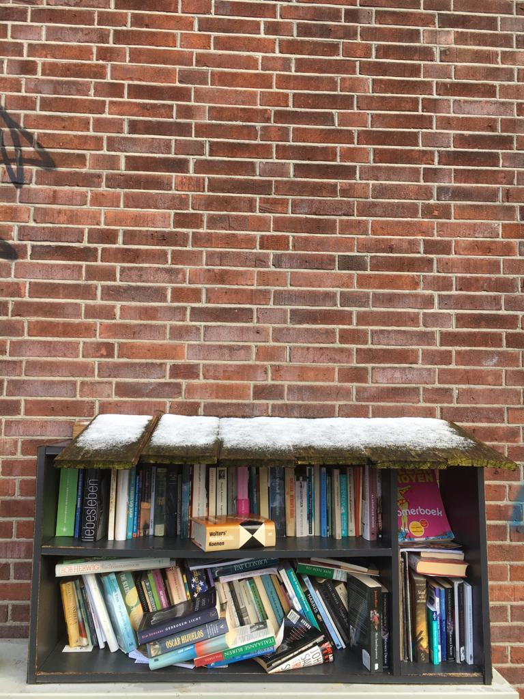
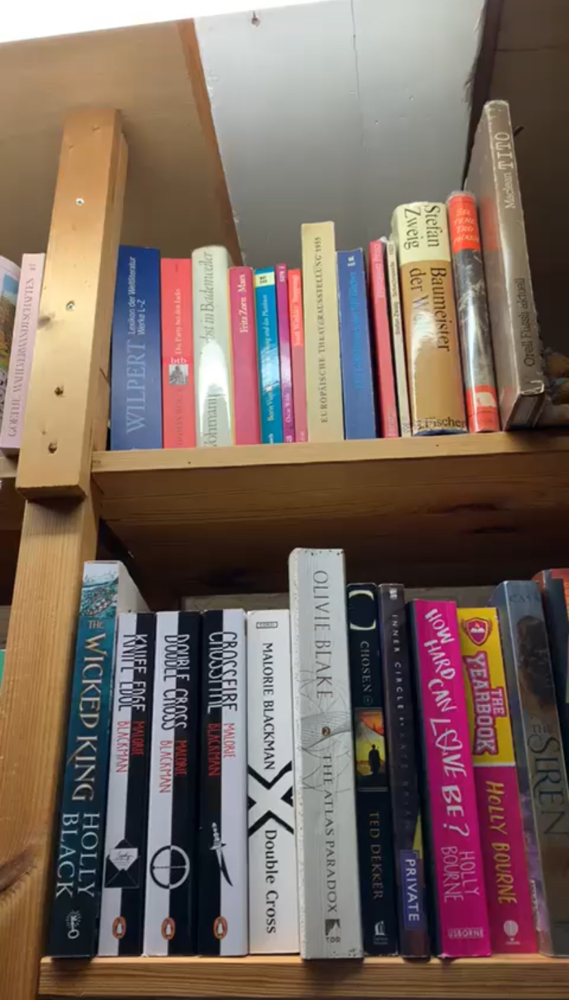

Interview
Door Marie Janette Haspels geschreven
Toen ik klein was, was de jeugdbieb ergens aan de Amstel in Amsterdam mijn favoriete hangout. Omdat ik daar op mijn 9de alleen maar kinderachtige boeken mocht lenen, las ik boeken voor oudere kinderen en volwassenen in de bibliotheek. Dat konden ze niet verbieden. Ik las thuis de boeken die mijn moeder leende.

Op de trappen van een herenhuis in de Sarphatistraat las ik verhalen voor aan kinderen. Ik kocht boeken voor een dubbeltje in een ruilwinkel, daar mocht je ook als kind gewoon alles kopen. Soms vieze boeken in papieren kaftpapier, maar de letters waren magisch. Als ik het uit had, leverde ik het weer in voor een stuiver, maar vaak probeerde ik het te ruilen op het Waterloopplein. Daarna werkte ik jarenlang bij verschillende bibliotheken. Functioneel beheer van de software voor het studiecentrum, online literatuuronderzoek, organiseren en geven van cursussen rond gebruik van computers, internet, leesclubs, aansturen van vrijwilligers met bookcrossing, gaming organiseren en veel meer. Daarnaast altijd lesgeven NT2, maar een fulltime baan was nooit een optie. Mijn cursisten nam ik wel altijd mee naar de bieb. En als ze geen geld hadden.. als je als vrijwilliger thuis bij ouderen op bezoek ging om boeken te ruilen, kreeg je een gratis pasje. Twee vliegen in een boek, eh klap.

En nu heb ik eindelijk mijn eigen minibieb. 24/7 open.Een oud koelkastje van de Facebook Weggeefhoek Dordrecht. Plankje erin van een plastic bak die ik scoorde in de weggeefkast op het Vogelplein.Een tafeltje dat ook al zeker 40 jaar oud is. En een mooie tekst van Alice in Wonderland.Geen kaartje met de regels die je bij sommige minibiebs ziet. Regels zijn bah. Regels die kinderen belemmeren zich te ontwikkelen zijn eng en erg.
Benieuwd naar de unieke wereld van tweedehandse boeken? hou jij van het milieu te helpen en vind je boeken lezen geweldig alleen je vind het te duur. Blijf dan zeker scrollen op deze website. Hier vind je alle ins en outs over beste/leuke tweedehandse boekenwinkels in Amsterdam en ook de gratis boeken in Amsterdam ook wel de boekenhuisjes genoemd.